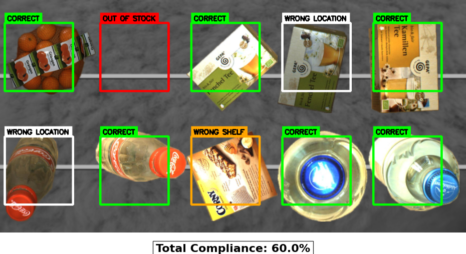

Year: 2026
Main Libraries: PyTorch, Scikit-Image, OpenCV, NumPy
• Developed an end-to-end computer vision pipeline to automate retail planogram compliance,
specifically engineered to overcome the dense occlusion challenges where standard bounding-box architectures
fail.
• Engineered a custom data generation pipeline to train the system from scratch, producing an 80GB+
auto-labeled synthetic dataset.
• Built a live inference cascade that bypasses traditional detection flaws by utilising a custom U-Net and
Deep Watershed Transform (DWT) to predict foreground product energy maps, isolating overlapping instances
with Connected Component Labelling (CCL) before classifying them through a ResNet-18 model.
• Delivered a final system that successfully transforms heavily cluttered shelf images into actionable insights,
automatically highlighting out-of-stock and misplaced products.
[View GitHub Project]